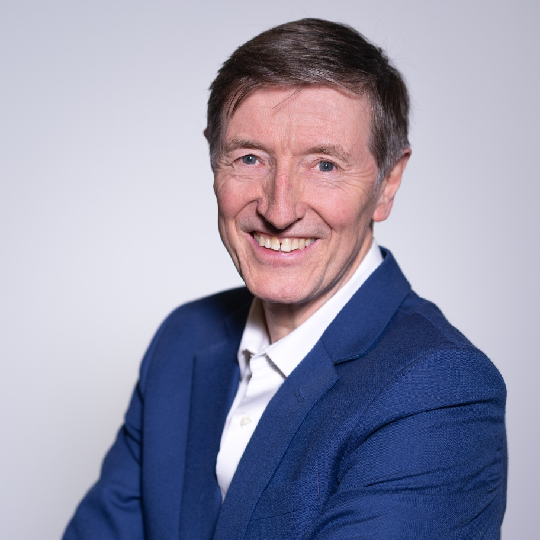
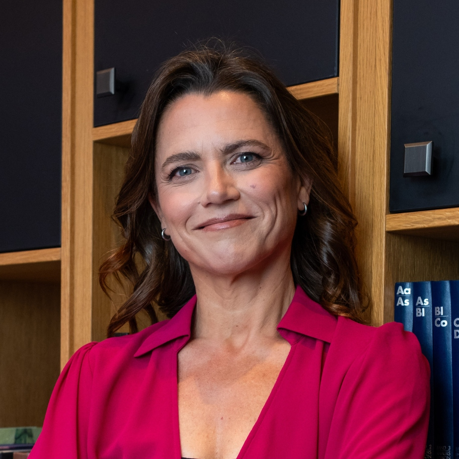
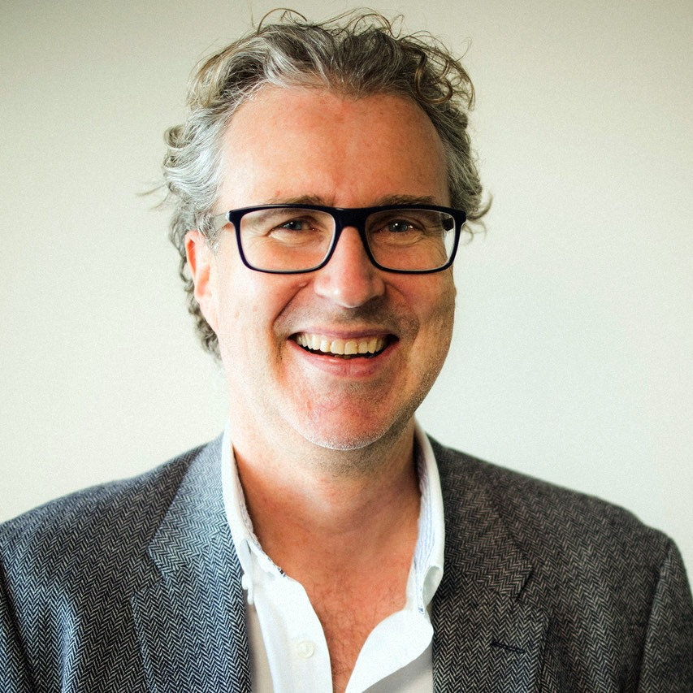
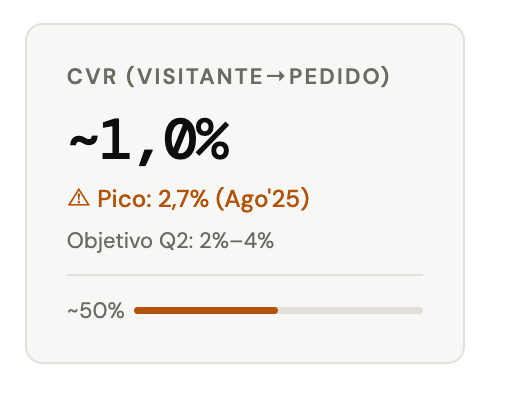
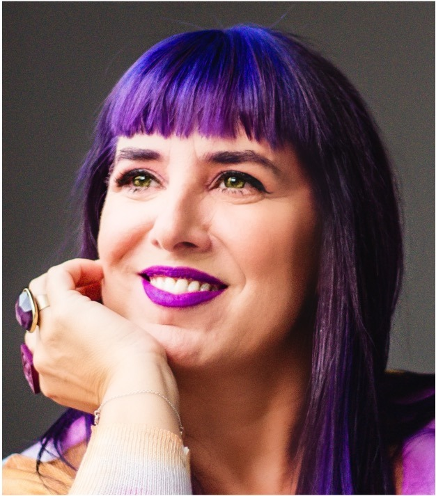

Leaders of Transformation
Transformation is driven by leadership: by how executives interpret, decide, and act in environments of increasing complexity. Executive coaching acts as a catalyst for this process by working at the less visible levels where sustainable change occurs. All this in demanding business contexts, marked by pressure, ambiguity, and the need to make critical decisions.
In this scenario, artificial intelligence redefines the context but also raises the bar of demand, making a more conscious, solid, and deeply human leadership essential.
Throughout the day, we will address transformation from three key angles:
- Leadership in high-demand contexts
- Real business application
- The impact of technology and artificial intelligence on executive coaching practice
But beyond trends, this meeting focuses on a critical question: what remains, what evolves, and what demands to be rethought in leadership development. A space designed not only to share ideas but to generate criteria and connect with key players in the sector.
The Meeting Point
I International Executive Coaching Conference brings together those working on the front line of real change within organizations.
Speakers
Featuring leading professionals in the sector

John Leary-Joyce
United Kingdom
Juan Carlos Cubeiro
Spain

Virginia Molet
Organizer

Andy Prior
France

Borja Manero
Spain

Cris Bolívar
Spain
Provisional Agenda
| Schedule | Topic | Presenter |
|---|---|---|
| 09:30 - 10:00 | Opening | Virginia Molet, Director of the Academy of Executive Coaching (AoEC) in Spain |
| 10:00 - 11:00 | Can leadership be developed without coaching? | Juan Carlos Cubeiro, National Management Award |
| 11:00 - 12:00 | Rapid AI traction for executives (English) | Andrew Prior, Learning Facilitator at MIT |
| 12:00 - 12:30 | Coffee break | - |
| 12:30 - 13:30 | Panel with executives | Speakers TBC |
| 13:30 - 14:00 | Competitiveness in Spain. Strategic decisions in a disruptive environment | Asociación Progreso Dirección (APD) |
| 14:00 - 15:30 | Lunch break | - |
| 15:30 - 16:00 | Coaching for the Leader's Being: reconnecting with Metacompetencies | Cris Bolívar, President of EMCC Spain |
| 16:00 - 16:30 | Deep communication: leadership starts when you stop acting | Borja Manero, Professor at the Complutense University of Madrid and co-director of the Arts and Technologies in Leadership group at Harvard |
| 16:30 - 17:00 | TBC | Speaker TBC |
| 17:00 - 17:30 | Coffee break | - |
| 17:30 - 18:30 | Beyond AI. Achieving results through the coaching relationship (English) | John Leary-Joyce, CEO of the Academy of Executive Coaching (AoEC) |
| 18:30 - 19:00 | Closure | Virginia Molet, Director of the Academy of Executive Coaching (AoEC) in Spain |
| 19:00 - 20:00 | Open event | John Leary-Joyce & Virginia, AoEC |